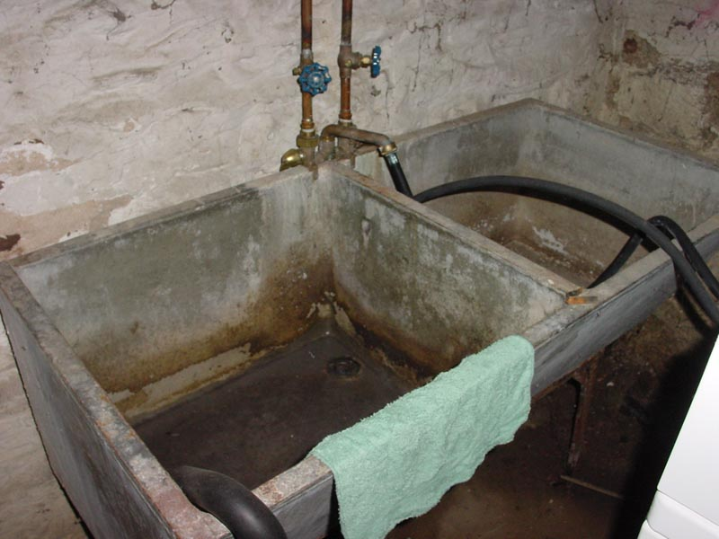

|  |
|
It is an old-style (probably pre-1940) lead-lined washtub and sink. The washer takes water from the faucet and dumps overflow into it. That means to adjust temperature, you leave the washer set to cold and mess with the faucets here. Not that anyone bothers. The washer, vis-a-vis the washtub, drains right into the sump pipe. [ Back | Sump Pipe? ] |